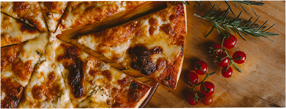

Make your own pizza
Family Café & Pizzeria
Apparently we had reached a great height in the atmosphere, for the sky was a dead black, and the stars had ceased to twinkle.
WE have a great history
Apparently we had reached a great height in the atmosphere, for the sky was a dead black, and the stars had ceased to twinkle. By the same illusion.
Family Café & Pizzeria
Apparently we had reached a great height in the atmosphere, for the sky was a dead black, and the stars had ceased to twinkle. By the same illusion which lifts the horizon of the sea to the level.
Apparently we had reached a great height in the atmosphere, for the sky was a dead black, and the stars had ceased to twinkle. By the same illusion which lifts the horizon of the sea to the level.
Apparently we had reached a great height in the atmosphere, for the sky was a dead black, and the stars had ceased to twinkle. By the same illusion which lifts the horizon of the sea to the level.

Family Café & Pizzeria
Apparently we had reached a great height in the atmosphere, for the sky was a dead black, and the stars had ceased to twinkle.
Discover
At Pizzon, our story begins with a passion for perfecting the art of pizza. Founded by food enthusiasts who dreamed of bringing an exceptional culinary experience to pizza lovers worldwide, our journey started with a commitment to quality and innovation. Inspired by traditional recipes and guided by a desire to explore new flavors, we embarked on a quest to create pizzas that not only tantalize taste buds but also tell a story with each slice. Our chefs, driven by creativity and expertise, meticulously craft every pizza, from the handcrafted dough to the finest, locally sourced ingredients.